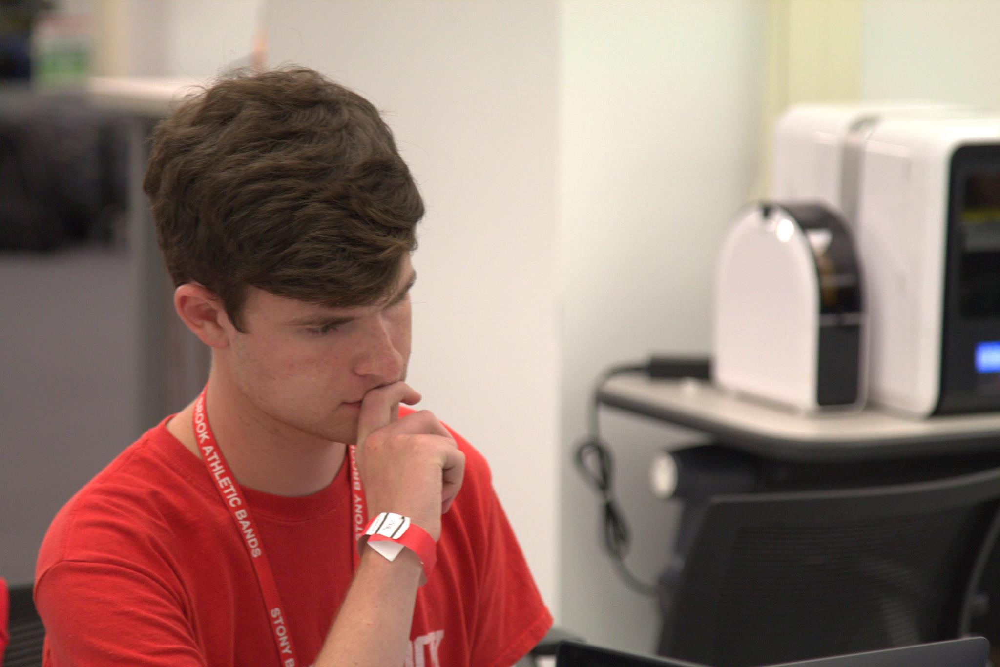
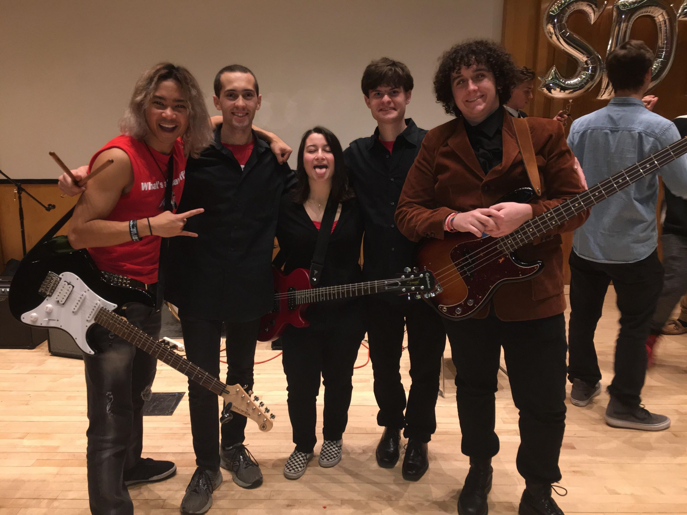

About Me

My passions include Computer Science, Music, and game design.
I have been programming for 8 years. Python and Java are my go-to programming languages. Other programming languages I use include Java, C#, and JavaScript. I am also experienced in markup languages such as HTML and CSS. As a community leader of the Stony Brook Computing Society, I enjoy sharing my knowledge with other students.
I have been playing the drums for 10 years. When I'm not coding, I play the drum set, tenor drums, timpani, and snare drum. I'm a member of the Spirit of Stony Brook Marching Band drumline and a college rock band called Spirit.
I enjoy programming and designing video games in my free time. I enjoy reproducing classic games such as pong and space invaders in a game engine called Unity. I have recently completed a design for a game code-named Project Rocket, and I plan to make this game and publish it for mobile devices.
Computer Science
 photo credit: Major League Hacking
I am studying Computer Science at Stony Brook because my career goal is to become a software engineer. Some of the courses that I have completed include AP Computer Science, Object Oriented Programming, Data Structures & Algorithms, Foundations of Computer Science (Discrete Mathematics). My coursework has taught me how to apply the content that I have learned into practical programming skills that include an organized and thoughtful approach to software design, coding, testing, and debugging.
Selected Projects
- Course Site Generator - a desktop application for the use of professors to simplify the process of building course websites.
- Book managing app
- Storm database generator & manager
- Recreated Space Invaders and Pong in the Unity game engine.
Music

I currently play drum set for a Rock Band called Spirit as well as the Stony Brook Pep Band. I also play tenor drums for the Stony Brook Marching Band.
My grandfather bought me my first drum set when I was nine years old. That drum set changed my life in many ways. Having been involved in music groups throughout my life, I have developed many skills such as teamwork, companionship, and leadership.
Why Me?
Besides my programming skills, I have many qualities that would make me an exceptional asset to any organization or team. First and foremost is my ability to focus on tasks, problems or projects. I have an extremely strong work ethic and know how to prioritize my time to focus on the project at hand. I am quick a study and love to learn new techniques, languages, and approaches to programming. Lastly, overcoming adversity is a skill I learned early on in life. Those struggles have served me well in the world of programming.
Contact